Mon stage

J'effectue mon stage chez Allianz, une entreprise internationale spécialisée dans l'assurance et les services financiers.
Mon lieu de stage est situé à Saint-Ouen.
Cette expérience me permet de découvrir le fonctionnement d’une grande structure et de participer à des projets concrets en lien avec mon BTS SIO.
Ce que je fais :
Durant ce stage, je travaille principalement sur l'automatisation des processus de revue des contrats et questionnaires de sécurité. Je développe des workflows avec Power Automate et participe à l’intégration d’outils innovants comme Allianz GPT pour améliorer l’analyse des formulaires clients.
Durant ce stage, je travaille principalement sur l'automatisation des processus de revue des contrats et questionnaires de sécurité. Je développe des workflows avec Power Automate et participe à l’intégration d’outils innovants comme Allianz GPT pour améliorer l’analyse des formulaires clients.
Présentation CEJM de l'entreprise :
Allianz est un leader mondial dans le secteur de l’assurance et de la gestion d’actifs. L'entreprise est une Société Anonyme (SA), ce qui signifie que son capital est divisé en actions et que la responsabilité des actionnaires est limitée à leurs apports. Ce statut juridique est adapté aux grandes entreprises cotées en bourse. Allianz propose une large gamme de produits d’assurance : vie, santé, automobile, habitation, ainsi que des services financiers. Son modèle économique repose sur la gestion des risques et la satisfaction client. Allianz opère dans de nombreux pays et emploie des dizaines de milliers de collaborateurs.
Allianz est un leader mondial dans le secteur de l’assurance et de la gestion d’actifs. L'entreprise est une Société Anonyme (SA), ce qui signifie que son capital est divisé en actions et que la responsabilité des actionnaires est limitée à leurs apports. Ce statut juridique est adapté aux grandes entreprises cotées en bourse. Allianz propose une large gamme de produits d’assurance : vie, santé, automobile, habitation, ainsi que des services financiers. Son modèle économique repose sur la gestion des risques et la satisfaction client. Allianz opère dans de nombreux pays et emploie des dizaines de milliers de collaborateurs.